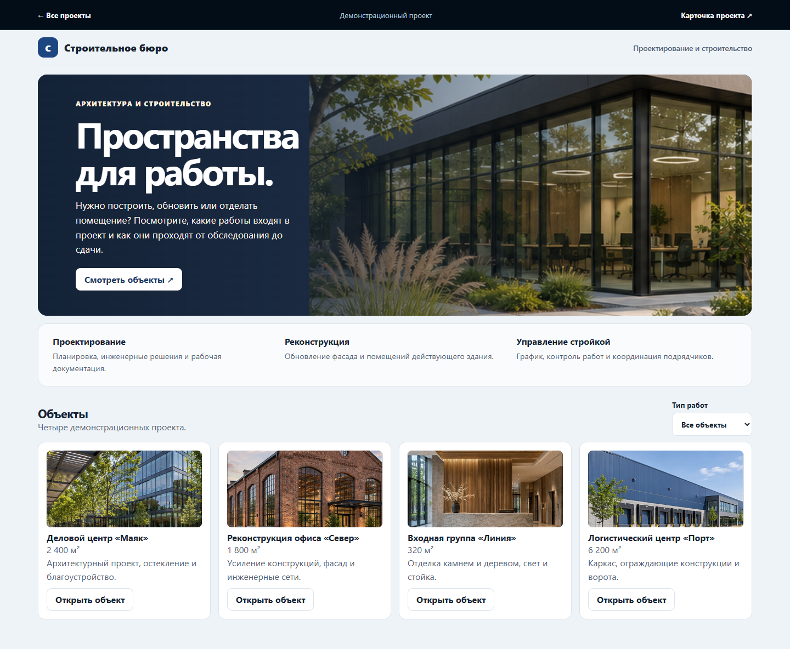

Корпоративный сайт подрядчика
Для подрядчика, которому нужно показать опыт по разным видам работ. Заказчик может найти объект, похожий на свой, и посмотреть, что на нём делали.
Что умеет решение
На сайте четыре объекта. Их можно отфильтровать по строительству, реконструкции и отделке. Карточка показывает площадь, список работ, этапы и два изображения объекта.
Попробуйте в демо
Выберите «Реконструкция», откройте объект «Север» и переключитесь на второе изображение кнопкой «Вперёд».

Проект работает в браузере на тестовых данных. Сторонний аналог на GitHub ↗


Визуальный ориентир — каталог проектов Arup. Здания в демонстрации вымышлены.